항공모함 잡담 (7/8)
게시: 2021-07-08T06:30:57+09:00
<세상의 온갖 흉악한 물건은 다 누가 만들었다?> 세계 최초의 대잠용 폭뢰 역시 영국이 만듬. 1913년 로열 네이비 어뢰 학교에서 처음 고안을 해낸 뒤, 처음에는 520kg짜리 Mark II 정규 기뢰에 수압식 기폭 장치를 붙여서 폭뢰를 만들어 보았으나 너무 큰 관계로 '이걸 투하한 배까지 날려먹을 판'이라 사이즈를 줄이기로 결정. 그래서 나온 것이 1916년 1월의 Type D 폭뢰 (140kg, 첫번째 사진). 그나마 이것도 빠른 배에서나 투하할 수 있었고 느린 배는 자기가 투하한 폭뢰에 자기가 당할 위험이 있어서 느린 배를 위한 Type D* (54kg)을 따로 만듬. 이 폭뢰에 처음으로 당하는 영광을 누린 잠수함은 1916년 3월 독일 해군 SM U-68. U-boat를 꼬셔내기 위해 상선으로 위장한 무장 상선인 "Q-ship"인 HMS Farnborough (3200톤)이 이 폭뢰를 투하하여 잠항하던 U-68을 타격. 결국 격침시킴. * 두번째 사진은 같은 Q-ship인 HMS Tamarisk.
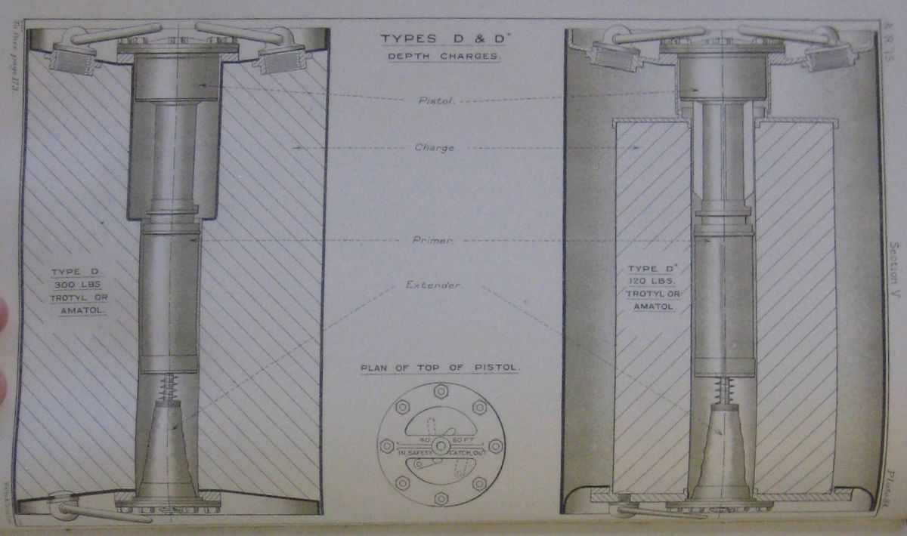 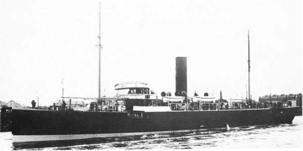
<경항모의 약점> 사진1은 1944년 6월 경 미해군 Independence급 경항모 USS Belleau Wood (CVL-24, 1만1천톤, 31.5노트)에 착함 중인 F6F Hellcat. 인디펜던스급 경항모는 원래 경순양함으로 건조 중이던 함체를 급히 경항모로 변경한 것이라 속도는 정규 항모만큼 빨랐으나 가장 큰 약점은 너무 작아서 피격시 damage control이 어려웠고 조금만 날씨가 궂어도 요동이 너무 심해 착함이 극히 어려웠다는 것. 과연 저 헬캣이 무사히 착함했는지는 잘 불분명. 이 벨로 우드는 WW2 종전 이후 항공모함을 갖고 싶었던 프랑스에 공여되었는데, 애초에 WW1에서 미군이 싸웠던 벨로 숲 전투를 기념하여 지어진 이름이다보니 프랑스 해군도 그 이름 그대로 Bois Belleau (Bois는 불어로 Wood라는 뜻)로 지음. 프랑스는 이 경항모를 1954년 베트남 독립 전쟁과 알제리 독립 전쟁 때 써먹었으나 큰 덕은 못 보았고, 1960년 미국에게 반납함.
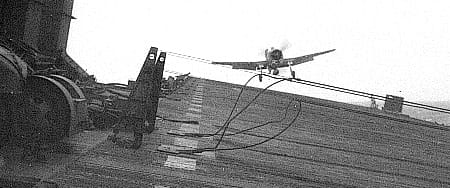 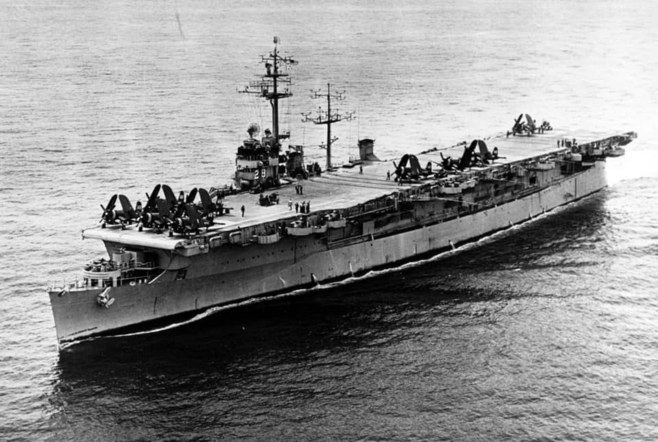
<어차피 미쓸 맞으면 다 뚫리는데> 항모를 비롯한 현대적인 군함을 노리는 것은 포탄이 아니라 주로 항공기에서 날아오는 대함 미쓸. 포클랜드 전쟁에서 격침된 HMS Sheffield (D80)도 강철과 케블라로 CIC(중앙 통제실)와 탄약고 등 주요 방호 구역은 장갑을 입혔으나 아르헨티나군이 쏜 엑조세 미쓸에는 속수무책. 그러니 군함에 장갑을 입히는 것은 그냥 돈 낭비 무게 낭비 아닐까? 아님. 여전히 CIC와 탄약고 등 주요 부위는 장갑을 입혀야 함. 그러지 않았다가는 한낱 헬리콥터 기총소사에도 아래와 같은 꼴을 당할 수가 있음. ** WW2 당시 미군 항공기들은 일본군 화물선에는 집요하게 기총소사. 얇은 철판과 나무로 된 선체를 그대로 관통한 총알이 사람은 물론 장비 등을 강타하여 큰 피해를 입혔고 간혹 탄약 또는 연료를 건드려 유폭도 일어났기 때문 (첫번째 클립). 군함의 경우에는 그래도 장갑이 있어 기총소사는 별로 피해를 주지 못함 (두번째 클립).
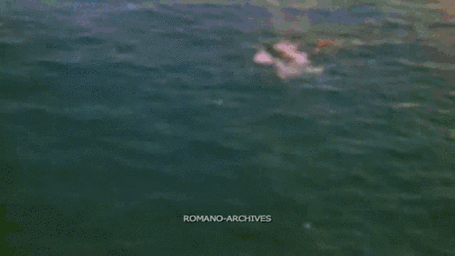 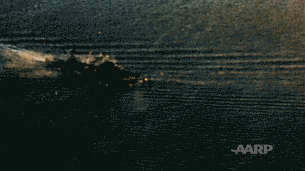
<호위 항모의 최후> 상선 선체를 기초로 만든 싸고 느리고 작은 호위 항모(escort carrier)는 처음에는 미해군의 곱지 않은 시선에 시달렸으나 무엇보다 소중한 보급선 수호와 정규 항모의 보조라는 측면에서 WW2 승리에 매우 큰 역할을 수행. WW2 종전 후에도 한국전쟁에 파견되어 평양을 폭격하는 등 많은 임무를 수행. 흔히 최후의 호위 항모라고 일컬어지는 배는 Casablanca급 호위 항모 USS Thetis Bay (CVE-90, 10,500톤, 19노트, 사진1은 1944년의 모습). 전쟁 이후 1955년에 CVHA-1로 함선 코드가 변경되면서 미해군 최초의 헬리콥터 모함이 되었다가, 다시 1959년에는 LPH-6로 변경되면서 강습상륙함으로 변경 (사진2). 실전에는 참전하지 않았으나 쿠바 미사일 위기 때 미해병대를 싣고 쿠바 침공 준비에 나서기도. USS Thetis Bay가 1964년 퇴역하면서 고철로 팔린 것이 호위 항모의 최후라고 기억하는 사람들이 많지만 진짜 최후는 아이러니컬하게도 최초의 호위 항모인 USS Long Island (CVE-1, 사진3). 이 배는 전쟁이 끝나자마자 1946년 퇴역 당했지만 이후 여기저기 팔려다니며 여객선으로 사용되다 1965년에 불이 나자 그 이후로는 네덜란드 로테르담 항구에 정박한 채 학생들을 위한 호스텔로 사용됨. 결국 1977년에 고철로 팔림. 사진 4는 USS Long Island가 Seven Seas라는 이름의 여객선으로서 노르웨이에서 스키 관광객을 태우고 있는 1960년의 모습.
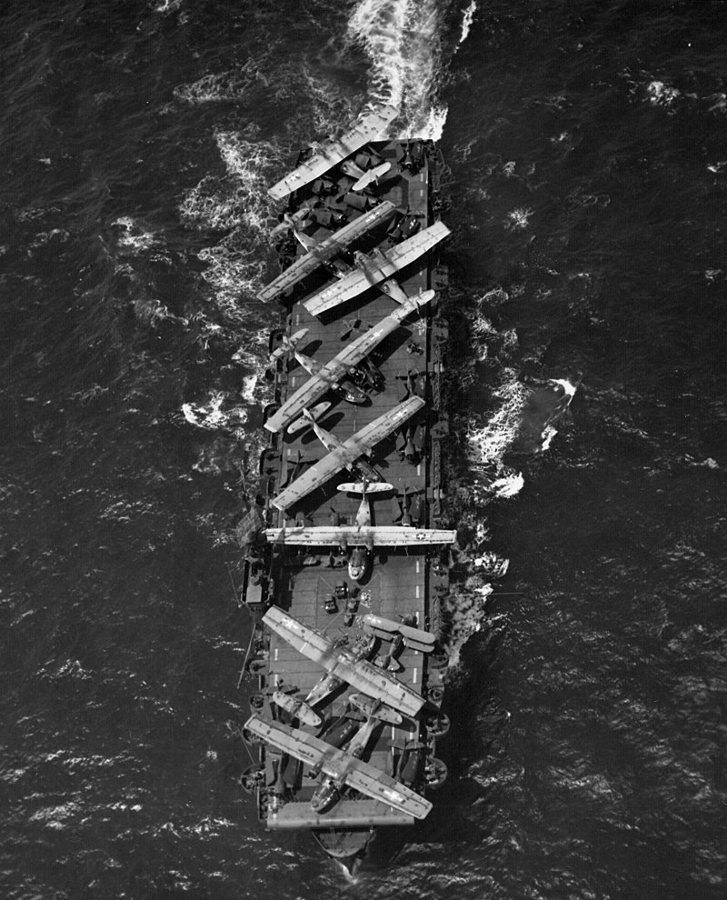 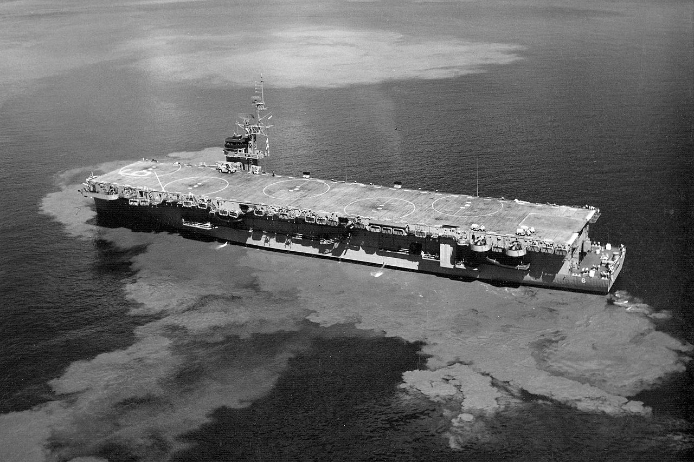 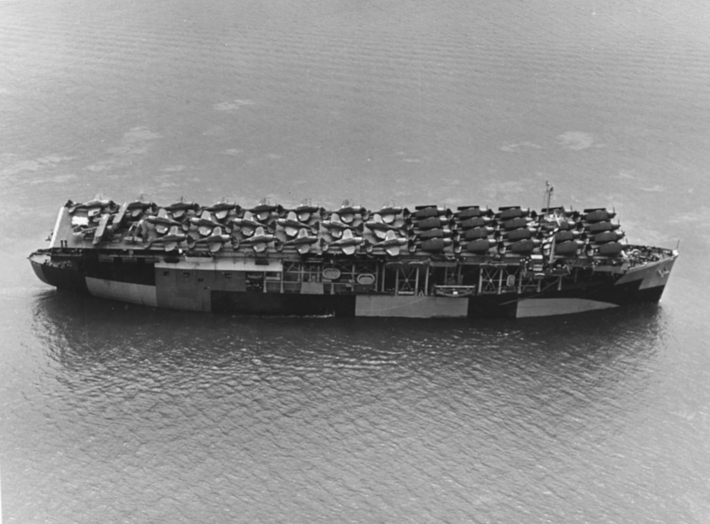 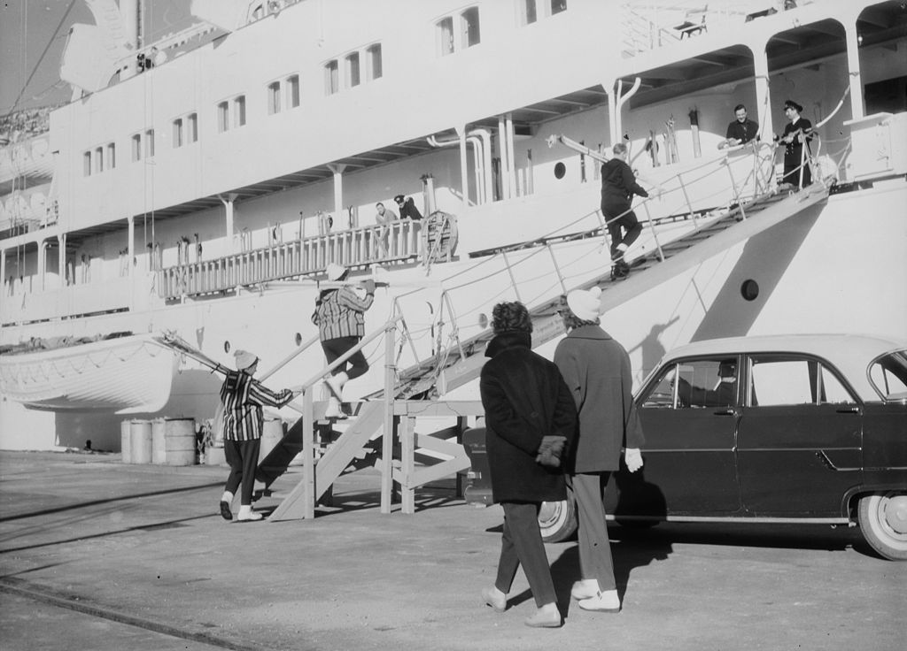
<사실 류호정이 어느 정도 맞다> 류호정은 다른 이유로 진보 쪽에서도 극혐 대상이 된 인물이지만, '알고리즘 투명화법'이 어느 정도 필요한 것이 맞긴 하다. 이게 포털의 뉴스창이나 댓글창 문제를 지칭하는 것만은 아닌 듯 하고, 정말 XAI (eXplainable AI) 혹은 MLI (Machine Learning Interpretation)을 말하는 것으로 보인다. 어떤 분들은 '쟤가 deep learning을 이해 못해서 저런 무식한 소리를 하는 것'이라고 폄하하기도 하지만, 실제로 많은 기업에서 성능(즉 정확도)이 괜찮은 AI model을 학습시켜놓고도 현업에서 못 쓰고 있는 경우가 꽤 많다. 그 이유는 한두가지가 아니겠으나 그 중 매우 중요한 것이 '왜 AI가 이런 판단을 내렸는지에 대한 설명이 불가능하다는 것'. 가령 대출심사에서 왜 특정인물에게 거액 대출이 승인되었는지, 반대로 왜 특정인물에게는 거부되었는지 설명을 요구받을 수 있다. 금융기관 내에서야 '몰라요, AI가 그렇게 판단했어요, 나중에 부실로 이어졌는지 통계치를 내보면 AI가 옳은 판단을 했더군요' 라고 말할 수 있다. 그러나 금융기관은 모두 정부기관의 감독과 감사를 받는 entity이니 그렇게 말하고 끝낼 수는 없다. 설명이 필요하다. 삼성전자나 현대자동차 등의 생산 현장에서도 그런 AI의 판단에 대해 설명이 필요할 수 있다. 소규모 기업주들은 그걸 이해해줄 수도 있지만, 제대로 된 회사라면 이사회를 납득시켜야 하는데, 왜 더 싸고 불량률도 더 낮은 A사의 부품을 안 쓰고 더 비싸고 불량률도 더 높은 B사의 부품을 쓰게 되었는지를 설명 못하면 곤란하다. 그런 기업 경영의 문제에 법률로 개입하는 것이 맞나? 그럴 수도 아닐 수도 있다. 가령 미국의 경우, 대출 심사용 deep learning model을 학습시킬 때 사용된 dataset에 인종이라는 칼럼이 들어갔다고 생각해보라. 아마 AI는 흑인 고객들의 대출을 매우 어렵게 만들 것이다. 그게 옳은가? 통계학적으로는 옳겠지만 정치적으로는 절대 아니다. 그건 법률적으로 개입해야 하는 것이 맞다. 하지만 AI의 판단을 기술적으로 설명하라는 것은 불가능하지 않은가? 전역(global) 수준에서 보면 불가능하다. 그러나 국지(local) 수준에서 보면 꼭 불가능하지는 않다. 거기에는 LIME 등 몇가지 기법이 있는데, 그런 기술들을 이용하면 최소한 이 사람이 불합격된 것이 출신 지역 때문인지 연체 기록 때문인지는 설명 가능하다. (아래 사진3이 LIME에 대한 기초적인 설명. 저 그림이 개구리라고 판단한 이유가 붉은 눈이나 손 끝에 달린 둥근 돌기 때문이 아니라 저 툭 튀어나온 눈과 넓은 입 때문이라는 것을 알 수 있다.) 류호정이 제시하는 그런 법안이 AI 발전을 저해하나? 그럴 수도 아닐 수도 있다. 일단 AI 엔지니어들의 일이 많아지고 힘들어지는 것은 사실이다. 그러나 그 때문에 XAI/MLI 기법이 발달하게 될 것도 자명한 일이다. 그리고 XAI는 분명히 필요한 분야이다. ** 경항모에서 무인기 운용하려면 XAI도 발전해야 한다.
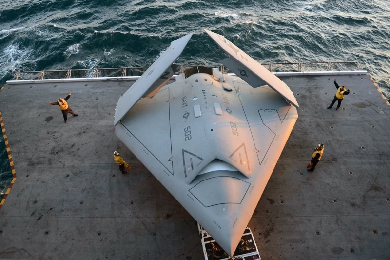 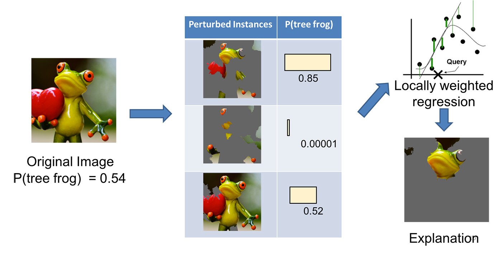